QuickFolders.org
| Home Installation Version History FAQ + Tips Support QuickFolders! Screenshots Bugs + Feature Requests quickFilters Menu On Top |
News
February 2016: I have created a new YouTube channel with tips and tricks such has how to get started with Addons.
- Version 3.12Independent Palette types for tab states.
- Version 3.8.1Tabs remember the selected QuickFolders category
- Version 3.6 Palette rewrite and paint mode.
- Version 3.3 Filter List Enhancements
- Version 3.1 Move Folders with SHIFT
- Version 3.0 Filter Learning Tool
- Version 2.12 New Icons
- Version 2.11 Multiple Category Support
- Version 2.9.3 Finds and reuses open Tabs
QuickFolders
Welcome to the new home of the QuickFolders project. If your looking for the latest version you can download it at Mozilla.
Make sure to visit our YouTube channel with tips and tricks such has how to get started with Addons.
About QuickFolders
QuickFolders is a thunderbird extension created by Alexander Malfait and me (Axel Grude).
Folder Tabs - cuts through the clutter of the folders sidebar by having your most important folders as tabs. Open folders and sub folders, move/copy mails without scrolling around or searching. Use categories for filtering the faves!
For Getting started skip down to this section or have a look at to the screen shots section!
A Brief Description
This extension adds an extra toolbar to Thunderbird. When you drag a mail folder to it, you get a tab that acts as shortcut to that mail folder. This supports full drag and drop, like the corresponding folder in the folder tree - You can drag messages on it to move/copy them to the folder, and access the bookmarked folders through keyboard shortcuts.
This is handy when you have a large tree of folders for clients or projects, but use only a few of them at the same time.
Getting Started with QuickFolders
After installing Quickfolders, this is what Thunderbird will look like:

Next, you pull your most used folders from the folder tree pane onto the new toolbar.

The result is a new QuickFolders Tab with the name of the folder. Now try to add another folder (the Inbox is probably a good idea as we will need this often):

If you like, you can rename this by right-clicking and selecting QuickFolders Commands ► rename. QuickFolders will prompt you to enter a new name:


This will rename it in the QF tab but the folder itself will keep its old name! Vice versa, if you rename the folder itself the QF tab will NOT get a new name.
You can now alternate between the folders (Studio and Inbox) quickly by clicking the corresponding tabs (Studio and GMail).
Since the Inbox should be at the left hand side, I simply drag the tab to the left of the Studio folder.
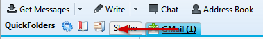

The real power of this extension is revealed when you try and drag some emails on the tabs.
Let's say I got a newsletter in my Inbox that I think should be stored in the Studio folder: Click it and drag to the Studio tab:
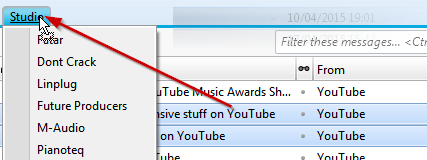
You have probably noticed on the previous image that a menu was shown under the tab - this happens if the folder contains subfolders.
These also accept dragged emails - to achieve this drag the emails first to the tab and wait for the menu to popup; then continue to drag down to the subfolder.
Once the correct subfolder is highlighted let go of the mouse key.

You can also access nested subfolders by enabling QuickFolders Options ► General ► Behavior ► Expand Subfolders in popup menus
Numbers, Shortcuts and other Options
You might have noticed that the first 10 tabs have digits 1. through 0. in front of them, these are shortcuts and can be used with the key combination [ALT]+[digit] in order to jump to the folder. You can switch off this behavior (and/or the display of the digit) in the option window. To open it, just right-click an empty area on the QuickFolders toolbar and select 'QuickFolders Options':
General Options

- The options 'Use keyboard shortcuts' and 'Use Ctrl instead of Alt' control the actual shortcut behavior. This can be used to quickly access the first 10 folders using [Alt]+0 .. [Alt]+9. Beware as other extensions (such as lightning) might interfere with these.
- Display tabs for folders with unread messages in bold: Handy for seeing unread tabs at a glance.
- Display buttons for folders with messages in them italic: Another option to distinguish empty and message-containing folders.
- Display tabs with newly arrived mail italic: Only applies to mails that has arrived in the current working session.
- Highlight folders with new: Only applies to mails that has arrived in the current working session - displays a yellow "diamond" and a shadowed inset field to emphasize new mail. Also works in subfolder menus - highly recommended.
- Display the number of unread messages on the folder button: This is updated while you read emails and receive new mail. The number is shown in brackets after the folder name, like this: Inbox (10). If no unread mails exist in the folder, the number is not shown.
- Display buttons for folders with unread messages in bold: This option applies to the tabs but also the popup menus that are listing subfolders
- Display the total number of messages on the folder button: Similar to the option "display number of unread messages". If both options are on then unread count is listed first, like this (1 / 100). If no unread emails exist, then the first number is omitted.
- Also display totals of sub folders: If this option is activated, all totals contained in subfolders are displayed as additional number preceded by a +, using the preferences above (display unread / totals). It also will result in the tab being bold if subfolders have unread mails (and the bold option is active).
Highly recommended.
For example, if the option for displaying unread messages count and this sub folders option are activated then
- (3) means there 3 unread messages, in the folder itself
- (+5) means there are no unread messages in the folder itself, but there are 5 unread emails the subfolders
- (3+5) means 3 unread mails in the folder and 5 unread mails in its subfolders
- Focus on Message List when changing tabs: When you click on a tab you can now start navigating the folder list with the cursor keys straight away.
- Expand Subfolders in popup menus: When you click or drag mail to a tab it will show all subfolders, not just the ones contained in the first level.
- Force alphabetic Sorting of menus with subfolders: I tried to sort the folders in a more logical way attempting to include the most commonly used special characters of various languages. Some room for improvement here.
- Hide QuickFolders when they are not needed. This applies mainly to content / search / calendar tabs and will hide the QF toolbar on these.
- Toolbar Menu Icon - this icon can be used to display a lot of general QuickFolders commands, but right-clicking an empty area on the toolbar will also display the menu
- quickMove button: use this button to move emails to any other folder quickly. drag on your mailsand start typing a folder name. For advanced configuration of this feature and a keyboard shortcut, pleasee refer to the "Pro" settings.
- Reading List: use this button to bookmark emails permanently. Click on the email title to jump to it or use SHIFT or CTRL to open the mail in a new tab / window. The number of bookmarks is limited in the Free version of QuickFolders.
- Recent Folders Tab: Looking at the timestamps of _all_ folders in the folder tree this will give the last 10 folders that were accessed (or that mail has been moved to).
Also builds a sub folders list for each entry on the fly. Performance of this depends greatly on your machine's speed.
It is often a handy feature if you need to tidy up lots of mail and jump around a lot. Advanced configuration can be done via right-clicking:
extensions.quickfolders.recentfolders.folderPathDetail
- Folder Name
- Folder Name - Mail Account
- Account - Folder Path (*)
- Folder Path
- Folder URI (for debugging)
keyboard shortcuts
tab content
behavior
main toolbar elements
Advanced Options

- Current Folder Toolbar: the little toolbar above the preview message area can be configured here.
- Menu Configuration: Hides / shows the most common top commands on the tab context menus.
- Miscellaneous: You can make the 'Quickfolders' label at the start of the QuickFolders toolbar invisible in order to save space - new (in 1.9): change the actual text by right clicking this option.
- Miscellaneous: CSS transitions are used to make color transitions smooth (flat style only - works for tabs that do not have individual colors in filled style)
- Debug: this enabled on messages that can be used to troubleshoot problems. These show up in Tools / Error Console. Additionally, more verbose messages can be toggled on/off by right clicking the debug option. The delay is a waiting time (in milliseconds) that delays the visual initialization procedure of QuickFolders which can be used in some cases when the styling doesn't work after starting Thunderbird. Normally you shouldn't need to change this.
More Tabs, more Functions
Now lets add a few more folders we believe are going to need in the future...
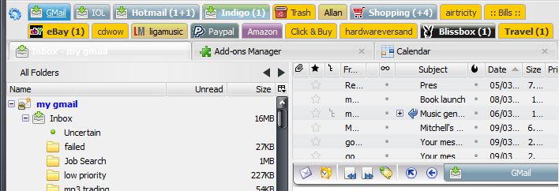
As we can see here now, it can get a bit messy if we have many folders.
Luckily QuickFolders wraps the tabs to multiple lines, but it becomes more difficult to find the folder we are looking for.
Therefore Alex introduced the Folder Categories, with which we can group tabs that belong together. Say we have three folders related to Music that we are using a lot.
These folders are called 'Studio', 'M-Audio' and SoundOnSound. We want to group this into a category "Music". right-click the first of these folders and select 'Set Tab Category...'

This opens the window for managing tab categories. Now enter 'Music' under New Category and then click the [Add] button:
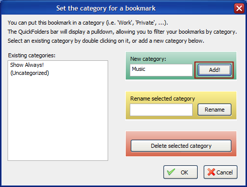
Now we can see a new dropdown control on the QuickFolder bar, which is currently selecting (Display All). You can change to select 'Music' and only see the Studio folder.
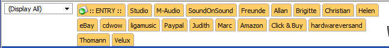instead, lets add the other 2 folders (M-Audio and SoundOnSound), right click on M-Audio, and select 'Set Tab Category...' You can now see 3 selections: Music, Show Always, and Uncategorized. Select the Music entry and click OK.
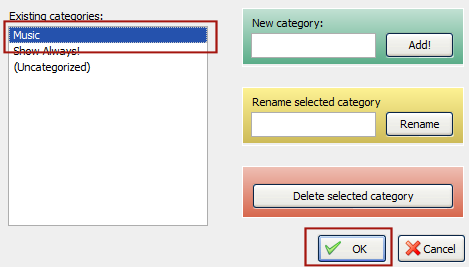As next Step we select the Inbox category (GMail) and choose "Show Always!" If we switch to Music in the Category dropdown we will see this:
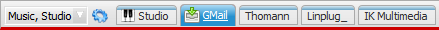
We can do the same for friends and create a new Category friends where we put all our friends names. Since the Inbox has the style "Show Always" it will also be visible if we select the Friends category:
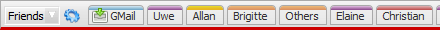
Finally, we do the same with the remaining tabs, which neatly fit into a new Category we call "Shopping":
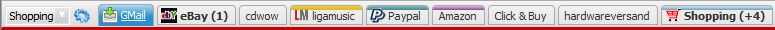
Just to keep everything tidy, we can also re-order the tabs by simply dragging them to the desired position:
Tab Commands

Tab and folder specific commands were put into 2 menus at the top of the folder dropdown menu, you see these when right-clicking on a tab.
There are 2 types of commands, Mail folder commands and QuickFolders commands. Depending on the context there might be additional "fast commands" on the top
- these can be disabled using Options > Advanced > Menu Configuration > Mail Commands:

- Mail Folder Commands are a sub set of the most useful commands from the folder tree (left hand side of Thunderbird). Anything you do here will directly affect your folders I often want to use such mundane commands as "Mark all Messages Read" or "Empty Trash" without having to reach over to the folder tree... if there are any important ones I have missed, please head over to the bugs section for requests. There is also a dedicated button for mail commands on the current Folder bar.
- QuickFolders Commands are special commands that change the structure or display of the QuickFolders - as such they do not affect your Emails or Mail Folders directly. As a shortcut, you can hold down CTRL while you right-click a tab to access this menu directly.
Advanced Drag and Drop
You can drag items from any folder submenu directly to the QuickFolders toolbar to make new tabs even easier:

Removing Tabs
If you add to many tabs the QuickFolders bar can also become a little bit overwhelming. To keep the Extension usuable it is important to keep a balance between having lots of shortcuts and finding the important folders quickly. Therefore, it is a good idea to have not all but the most frequently used folders of a catgory and then some "parent folders" on the toolbar:
| Let's say we have a fairly monstrous folder tree for archiving all conversations with friends over the last 10 years or so: | 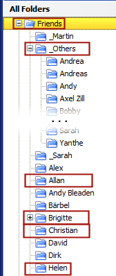 | Of course we could add all of these to the folder bar and have a huge number of shortcuts to choose from. Instead we will select the folders "Friends" and "_Others" (which contain many subfolders themselves) and then just friends we communicate with the most (see folders marked with red). We can still reach everybody else by right-clicking the "container" folder Friends or Others, without having to use the folder bar. The we simply click on the folder name in the popup menu: | 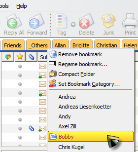 |
With the same right-click menu we can now also remove tabs that are not necessary by selecting 'Remove Tab' from the popup menu.
Moving Folders around in the Tree
If you want to move a folder to a different position in the tree, I highly recommend dragging it from the tree to a new location on one of the folder tabs (or subfolders) on the QuickFolders toolbar; this will ensure that the connection between QuickFolder and the Folder remains intact, in case it alread has its own QF tab. This is currently a "Windows only" feature. Hopefully there will be a version for Mac / Linux soon.
Advanced Feature: The Filter Wizard
The "Filter Wizard" is a helpful utility to create maile filters in order to move mail to other folders quickly. It started as a concept for QuickFolders but quickly grew into the more feature complete Addon quickFilters. I highly recommend installing this alongside QuickFolders for full filter support. Among other things, it prefills the destination folder for you after you have dragged the email into one of the QuickFolders (or children).
quickFilters (and the filter wizard) are absolutely the quickest way to generate powerful filters with a few clicks. You can start creating filters by either clicking the filter button on the current Folder bar or by selecting the "Create Message Filters..." command from the QuickFolders options menu. To end this mode, simply click filter button again.
- Either click on the blue menu wheel > "Create Message Filters" or click the "Activate Filter Teaching" button on the current folder toolbar (both ways do the same thing)

or

- The Category box at the top left of QuickFolders will turn red and there will be a sliding notification:

- Drag an email to the top (either on a quickfolder or into a subfolder menu on QuickFolders). This will trigger the Create Filter Wizard.

- select a template (e.g. "based on Sender") and click [Create Filter...] - in the example I have pulled an email into the QuickFolders folder
- Next, the Edit Filter dialog is displayed - as you can see it already tries to "guess" what you want the filter to do when it should be applied,
based on the email that you dragged to the folder:

Since in this case I chose "Based on Sender", it will pull all conversations from and to joe@quickFolders.com into the QuickFolders folder. No need to select the folder (as it has been done automatically) or to enter any condition (this is based on the template that you have chosen). - Now tweak the filter as usual and click Ok to save it (and try it out in the Filter List)
- You can also click Cancel to not create the filter
- in the last step Thundebird's list of filters is shown. I added a search and some additional (Top / Bottom) buttons:

- You can repeat the process from step 2 to create more filters
- When you're done, click the filter button again to disable "Filter Wizard" mode.
With this, it is very easy to create new filters very quickly. The additional functions that I added to the filter list dialog I actually programmed after I had created the possibility to create many filters (as the list became too long to handle without the search function). Do expect more functionality around filters in the future, but I am also very interested in your feedback on the function I have described above.
The Current Folder Bar
I have been planning to add the Current Folder (Tool)bar for a while and it took more than a year of gestating this idea and around 3 weeks to implement.
I noticed that despite best efforts I would still reach over to the folder tree for such mundane tasks as removing junk mail or flagging all mails of the current folder
as "read"; usually this would be because the current folder was not actually a quickfolders tab or I couldn't actually see it as I
wouldn't bother looking "up there", so I thought to myself
It is located on the top of the Email preview area (unless you do not display the email in a separate window):

Additionally, I was always missing quick navigation commands that would allow me to delve into subfolders, go to parent folders or go to the next "sibling"
- this is what the buttons directly adjacent to the tab ar for:
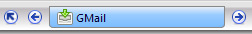
left, for the previous mail folder, the tab itself (which automatically pops up all subfolders when you click on it), right for the next mail folder,
and you can probably guess what the up button is for: that's right the current parent. One speciality is that you can actually drag the current folder tab
around like a folder itself and put it on the QuickFolders toolbar as a new tab.
Then to the left is a mail envelope which can also be dragged, this represents the currently viewed mail itself. And beside it the ubiquitous recent
folders button:
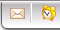
Theming Engine
The look of QuickFolders is selectable via the "Themes" drop down in QuickFolders options / Layout.
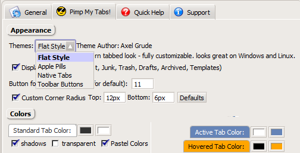
The new "Apple Pills" look was suggested and designed by Christopher White, to better blend in with a Mac based operating system

A Splash of Color
Since Mozilla programs are all about customization and themes, you can also change the layout of the QuickFolders toolbar to fit into
the color scheme / theme you are currently using. Right-click an empty area on the Toolbar and select 'QuickFolders Options...'.
Now select the second tab named "Bling My Tabs!":

- Display Icons: There are some special folders which can be found more easily if they are marked with an Icon.
- Display tabs as Flat Style: The Flat style makes the toolbar buttons look like Tabs (I use this style on all my screen shots). Button style was the default when Alex created the plugin, and you might find that it suits better to the look of your current Operating System. Please note that quite a few visual options, such as the Drag Indicators are not available when Flat Style is disabled. Most of the color options also only work with Flat Style.
For the different tab states you have 2 colors to choose, one for the text (left color field) and one for the background (right color field). The colors are currently picked with the standard color picker so the selection is limited - future versions of QuickFolders will probably have more freedom in selecting other colors.
Colors, Colors, Colors
You can select an individual color for each of the tabs, if you wish - just right click the folder and expand QuickFolders Commands ► Tab Color menu:
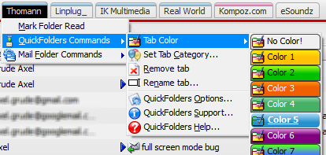
The actual appearance is either fully colored, or, more subtle, as a colored stripe at the top (this was my original design).
You can select this on the Options Page "Bling my Tabs!" under Individual Tab Color Appearance.
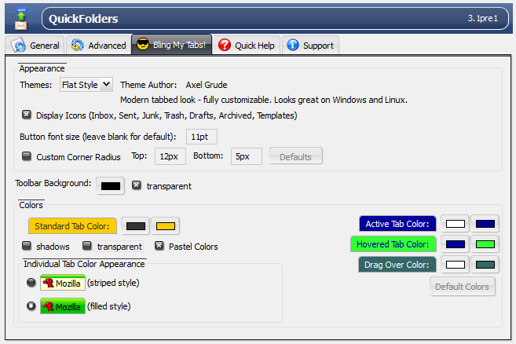
My other Extensions - highly recommended
quickFilters
quickFilters (Thunderbird) Quickly generate mail filters on the fly, by dragging and dropping mails and analyzing their attributes.
Zombie Keys
Zombie Keys for Firefox / SeaMonkey ; Zombie Keys for Thunderbird / Postbox
Entering European languages (which include diacritics (accented characters, diaeresis, umlauts, etc.), ligatures, the Euro sign, etc.) into Mozilla applications using a non-native keyboards doesn't have to be a pain any more!
QuickPasswords
QuickPasswords for Firefox / SeaMonkey;
QuickPasswords for Thunderbird / Postbox
this is a very neat and quick way to retrieve and use a growing number
of passwords, without displaying them on screen or having to re-type them.
Also supports renaming of multiple passwords!
SmartTemplate4
SmartTemplate4 offers an easy way to customize Thunderbirds default quote header by using templates. Templates can be created for every account as well as for global settings (for all email accounts).